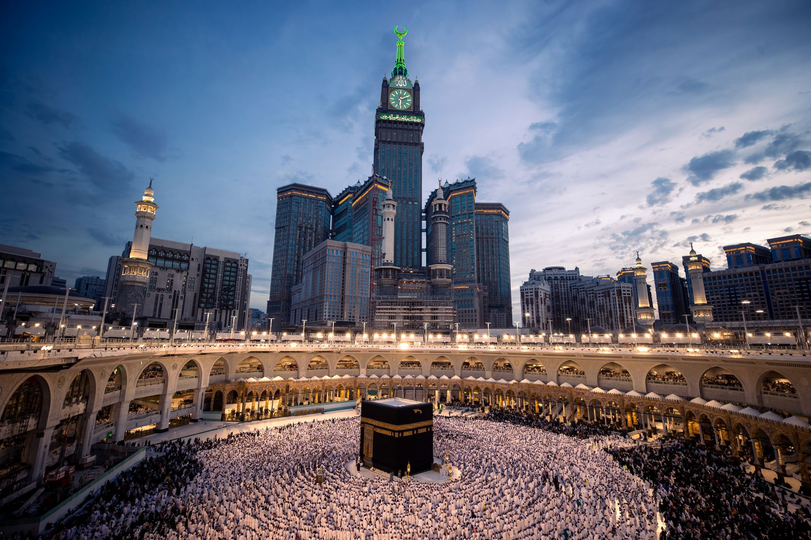
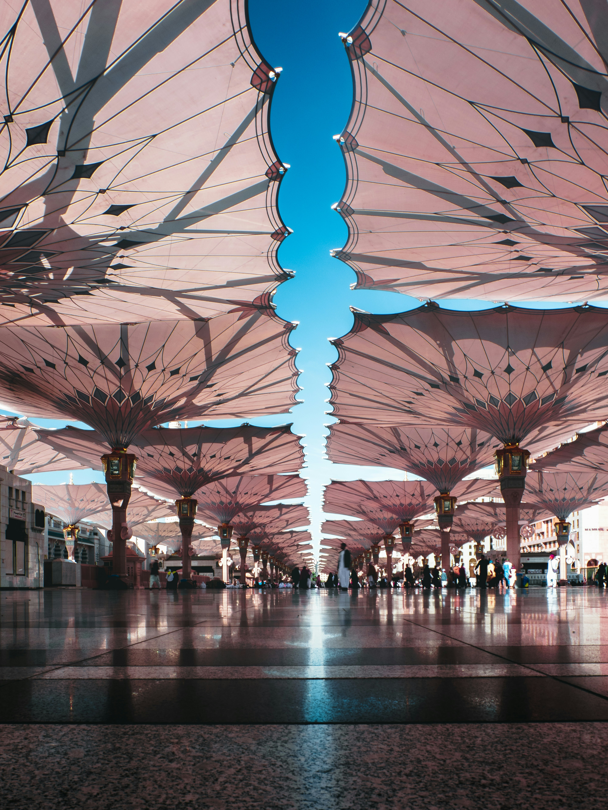
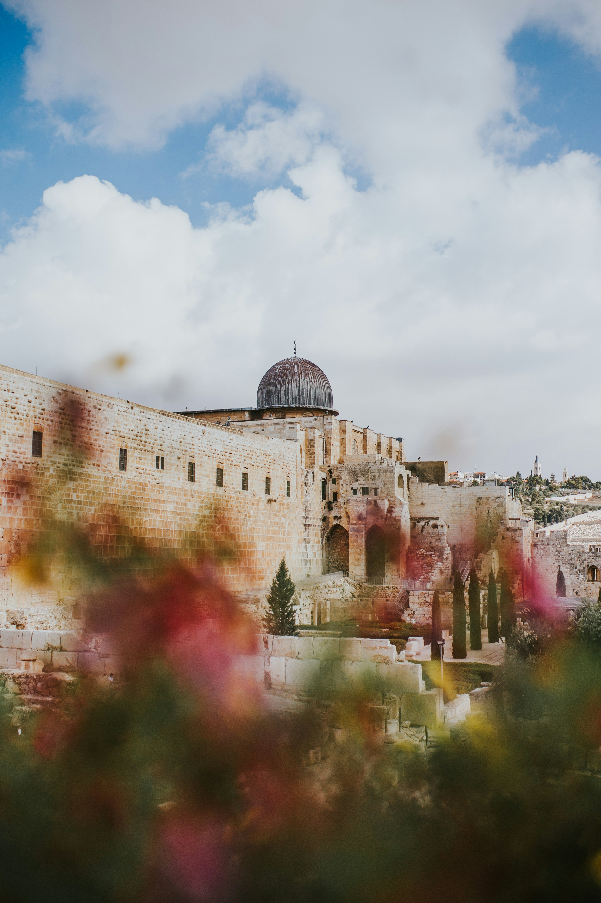

5 Pillars of Islam
- Shahadah – Testimony of Faith
- Salah – Prayer
- Zakah – Charity
- Sawm – Fasting Ramadan
- Hajj – Pilgrimage to Makkah
6 Pillars of Iman
- Belief in Allah
- Belief in Angels
- Belief in Books
- Belief in Messengers
- Belief in the Last Day
- Belief in Qadr (Divine Decree)
Tawheed
Tawheed is the concept of the oneness of Allah in His Lordship, His Names and Attributes, and in worship.
- Tawheed ar-Ruboobiyyah (Lordship)
- Tawheed al-Asma wa Sifat (Names & Attributes)
- Tawheed al-Uloohiyyah (Worship)
My Favourite Hadiths
The Prophet ﷺ said: "Actions are judged by intentions, and every person will get what they intended." [ Saheeh, Bukhari & Muslim]
The Prophet ﷺ said: "Make things easier, do not make things more difficult, spread the glad tidings, do not hate." [Saheeh, Bukhari]
The Prophet ﷺ said: "None of you will have faith until he loves for his brother what he loves for himself." [Saheeh, Bukhari]
Daily Dua
اللهم إني أسألك العفو والعافية في الدنيا والآخرة
O Allah, I ask You for pardon and well-being in this life and the next.
The Sahaba
The Sahaba were the companions of Prophet Muhammad ﷺ who accepted Islam during his lifetime and supported him in his mission.
- Abu Bakr as-Siddiq (ra) – The first Caliph
- Umar ibn al-Khattab (ra) – The second Caliph
- Uthman ibn Affan (ra) – The third Caliph
- Ali ibn Abi Talib (ra) – The fourth Caliph
Prophet Muhammad ﷺ
Prophet Muhammad ﷺ was born in Makkah in 570 CE. He received revelation at age 40 and conveyed Islam for 23 years until his passing in Madinah in 632 CE.
The Three Holy Places in Islam
Makkah al-Mukarramah
Makkah is the holiest city in Islam, containing the Ka'bah towards which all Muslims pray.
Al-Madinah al-Munawwarah
Madinah houses Masjid an-Nabawi and the blessed grave of the Prophet ﷺ.
Masjid al-Aqsa
Masjid al-Aqsa in Jerusalem is the third holiest site, mentioned in Surah al-Isra.